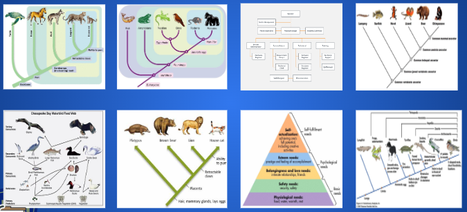

|
Are taxonomy and phylogeny similar? Yes or NO Show Answer |
NO |
2. Choose the diagrams that represent a clade. Encircle OR mark it with your favorite color.

Read the lesson and/or Textbook 1.3 section linked to this lesson. Also, practice the review questions.